Random Experiments and Sample SpacesPhép thử ngẫu nhiên và không gian mẫu
Grade 9 · Topic: ProbabilityLớp 9 · Chủ đề: Xác suất của biến cố trong một số mô hình xác suất đơn giản
1Lesson IntroductionGiới thiệu bài học
Learning goalsMục tiêu bài học
By the end of this lesson you can:
Sau bài học này, em có thể:
recognize a random experiment and its possible outcomes;
nhận biết được phép thử ngẫu nhiên và các kết quả có thể của nó;
describe the sample space \(\Omega\) of a simple experiment (coin, die, cards);
mô tả được không gian mẫu \(\Omega\) của phép thử đơn giản (đồng xu, xúc xắc, rút thẻ);
describe the sample space of a two-step experiment with a table or a tree diagram;
mô tả được không gian mẫu của phép thử hai bước bằng bảng hoặc sơ đồ hình cây;
count the outcomes in real situations (menus, codes).
đếm được số kết quả trong tình huống thực tế (chọn món, mã số).
2Mathematical VocabularyTừ vựng Toán học
random experiment – an action whose outcome we cannot know in advance, although we know all its possible outcomes.
Phép thử ngẫu nhiên – hoạt động mà ta không biết trước được kết quả, nhưng biết tất cả các kết quả có thể.
outcome – a possible result of the experiment.
Kết quả có thể – một kết quả có thể xảy ra của phép thử.
sample space \(\Omega\) – the set of all possible outcomes.
Không gian mẫu \(\Omega\) – tập hợp tất cả các kết quả có thể của phép thử.
coin toss / die (dice) – heads (H), tails (T); a die has faces 1 to 6.
Gieo đồng xu / con xúc xắc – mặt ngửa (N), mặt sấp (S); xúc xắc có các mặt 1 đến 6 chấm.
ordered pair / tree diagram – an outcome \((a;\,b)\) of a two-step experiment; a diagram of branches listing all outcomes.
Cặp số có thứ tự / sơ đồ hình cây – kết quả \((a;\,b)\) của phép thử hai bước; sơ đồ các nhánh liệt kê mọi kết quả.
3Useful English PhrasesCụm từ tiếng Anh thường gặp
Rolling a die is a random experiment.
Gieo một con xúc xắc là một phép thử ngẫu nhiên.
List all the possible outcomes.
Liệt kê tất cả các kết quả có thể.
The sample space is \(\Omega=\{H;\,T\}\).
Không gian mẫu là \(\Omega=\{N;\,S\}\).
Draw a tree diagram to show the sample space.
Vẽ sơ đồ hình cây để mô tả không gian mẫu.
The sample space has 36 outcomes.
Không gian mẫu có 36 kết quả.
4Prerequisite ReviewÔn tập kiến thức nền
Grades 6–8. We did experiments (tossing coins, rolling dice) many times and counted how often each result appeared.
Lớp 6–8. Ta đã làm thí nghiệm (tung đồng xu, gieo xúc xắc) nhiều lần và đếm số lần xuất hiện của mỗi kết quả.
Sets. A set is written with braces: \(\{1;\,2;\,3\}\).
Tập hợp. Tập hợp được viết trong dấu ngoặc nhọn: \(\{1;\,2;\,3\}\).
5TheoryLý thuyết
5.1 Random experimentsPhép thử ngẫu nhiên
DefinitionĐịnh nghĩa
An action or an experiment whose outcome cannot be known in advance, although we know all its possible outcomes, is called a random experiment.
Hoạt động mà ta không biết trước được kết quả của nó, nhưng biết được tất cả các kết quả có thể xảy ra, được gọi là phép thử ngẫu nhiên (gọi tắt là phép thử).
For example, tossing a coin, rolling a die, drawing a card from a box without looking are random experiments. Counting the days of a week is not (we know the result: 7).
Chẳng hạn, tung đồng xu, gieo xúc xắc, rút một tấm thẻ trong hộp mà không nhìn là các phép thử ngẫu nhiên. Đếm số ngày trong tuần thì không phải (ta biết trước kết quả là 7).
5.2 Sample spaceKhông gian mẫu
DefinitionĐịnh nghĩa
The set of all possible outcomes of a random experiment is called its sample space, denoted \(\Omega\).
Tập hợp tất cả các kết quả có thể của một phép thử được gọi là không gian mẫu của phép thử đó, kí hiệu là \(\Omega\).
Toss a coin (H: heads, T: tails): \(\Omega=\{H;\,T\}\).
Gieo một đồng xu (N: mặt ngửa, S: mặt sấp): \(\Omega=\{N;\,S\}\).
Roll a die: \(\Omega=\{1;\,2;\,3;\,4;\,5;\,6\}\).
Gieo một con xúc xắc: \(\Omega=\{1;\,2;\,3;\,4;\,5;\,6\}\).
5.3 Two-step experiments: tables and tree diagramsPhép thử hai bước: dùng bảng hoặc sơ đồ hình cây
How to describe the sample spaceCách mô tả không gian mẫu
When an experiment has two steps, each outcome is an ordered pair \((a;\,b)\): \(a\) is the result of step 1, \(b\) of step 2. We list all outcomes with a table (rows: step 1, columns: step 2) or a tree diagram.
Khi phép thử gồm hai bước, mỗi kết quả là một cặp số có thứ tự \((a;\,b)\): \(a\) là kết quả bước 1, \(b\) là kết quả bước 2. Ta liệt kê mọi kết quả bằng bảng (hàng: bước 1, cột: bước 2) hoặc sơ đồ hình cây.
If step 1 has \(m\) outcomes and, for each of them, step 2 has \(n\) outcomes, then \(\Omega\) has \(m\cdot n\) outcomes.
Nếu bước 1 có \(m\) kết quả và ứng với mỗi kết quả đó, bước 2 có \(n\) kết quả thì \(\Omega\) có \(m\cdot n\) kết quả.
Tossing two coins: \(\Omega=\{HH;\,HT;\,TH;\,TT\}\) (here \(HT\) means coin 1 heads, coin 2 tails).
Gieo hai đồng xu: \(\Omega=\{NN;\,NS;\,SN;\,SS\}\) (ở đây \(NS\) nghĩa là đồng xu thứ nhất ngửa, đồng xu thứ hai sấp).
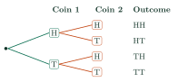
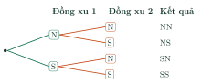
Rolling two dice: the table has \(6\cdot6=36\) outcomes; \((2;\,5)\) and \((5;\,2)\) are different outcomes.
Gieo hai con xúc xắc: bảng có \(6\cdot6=36\) kết quả; \((2;\,5)\) và \((5;\,2)\) là hai kết quả khác nhau.
| Die 1 \ Die 2Xúc xắc 1 \ Xúc xắc 2 | 1 | 2 | 3 | 4 | 5 | 6 |
|---|---|---|---|---|---|---|
| 1 | \((1;\,1)\) | \((1;\,2)\) | \((1;\,3)\) | \((1;\,4)\) | \((1;\,5)\) | \((1;\,6)\) |
| 2 | \((2;\,1)\) | \((2;\,2)\) | \((2;\,3)\) | \((2;\,4)\) | \((2;\,5)\) | \((2;\,6)\) |
| 3 | \((3;\,1)\) | \((3;\,2)\) | \((3;\,3)\) | \((3;\,4)\) | \((3;\,5)\) | \((3;\,6)\) |
| 4 | \((4;\,1)\) | \((4;\,2)\) | \((4;\,3)\) | \((4;\,4)\) | \((4;\,5)\) | \((4;\,6)\) |
| 5 | \((5;\,1)\) | \((5;\,2)\) | \((5;\,3)\) | \((5;\,4)\) | \((5;\,5)\) | \((5;\,6)\) |
| 6 | \((6;\,1)\) | \((6;\,2)\) | \((6;\,3)\) | \((6;\,4)\) | \((6;\,5)\) | \((6;\,6)\) |
6Worked ExamplesVí dụ có lời giải
ExampleVí dụ 1RememberingNhận biết – Random or not?Có phải phép thử ngẫu nhiên?
Which activities are random experiments? Give the sample space of each random experiment.
(a) Draw a card at random from a box of 5 cards numbered 1 to 5.
(b) Count the number of corners of a triangle.
(c) Spin a spinner with 4 equal sectors numbered 1 to 4.
Hoạt động nào là phép thử ngẫu nhiên? Viết không gian mẫu của mỗi phép thử đó.
a) Rút ngẫu nhiên một tấm thẻ từ hộp có 5 tấm thẻ đánh số từ 1 đến 5.
b) Đếm số đỉnh của một tam giác.
c) Quay một vòng quay có 4 hình quạt bằng nhau đánh số từ 1 đến 4.
Analysis: Ask: do we know the result in advance? Do we know all possible results?
Phân tích: Tự hỏi: có biết trước kết quả không? Có biết tất cả các kết quả có thể không?
(a) Random: \(\Omega=\{1;\,2;\,3;\,4;\,5\}\).
a) Là phép thử ngẫu nhiên: \(\Omega=\{1;\,2;\,3;\,4;\,5\}\).
(b) Not random: the answer is always 3.
b) Không phải: kết quả luôn là 3.
(c) Random: \(\Omega=\{1;\,2;\,3;\,4\}\).
c) Là phép thử ngẫu nhiên: \(\Omega=\{1;\,2;\,3;\,4\}\).
(a) and (c).
a) và c).
ExampleVí dụ 2UnderstandingThông hiểu – Two coinsGieo hai đồng xu
Toss two coins one after the other. Use a tree diagram to write the sample space. How many outcomes are there?
Gieo lần lượt hai đồng xu. Dùng sơ đồ hình cây để viết không gian mẫu. Có bao nhiêu kết quả?
Analysis: Coin 1 has 2 outcomes; for each of them coin 2 has 2 outcomes.
Phân tích: Đồng xu thứ nhất có 2 kết quả; ứng với mỗi kết quả, đồng xu thứ hai có 2 kết quả.
See the tree diagram in 5.3: \(\Omega=\{HH;\,HT;\,TH;\,TT\}\).
Xem sơ đồ hình cây ở mục 5.3: \(\Omega=\{NN;\,NS;\,SN;\,SS\}\).
\(2\cdot2=4\) outcomes. Note: \(HT\neq TH\).
Có \(2\cdot2=4\) kết quả. Chú ý: \(NS\neq SN\).
4 outcomes.
4 kết quả.
ExampleVí dụ 3Basic applicationVận dụng thấp – Two diceGieo hai con xúc xắc
Roll a red die and a blue die.
(a) How many outcomes does the sample space have?
(b) Write the outcomes in which the two dice show the same number.
Gieo một con xúc xắc màu đỏ và một con xúc xắc màu xanh.
a) Không gian mẫu có bao nhiêu kết quả?
b) Viết các kết quả mà hai xúc xắc ra cùng số chấm.
Analysis: Use the 6 × 6 table in 5.3 (row: red die, column: blue die).
Phân tích: Dùng bảng 6 × 6 ở mục 5.3 (hàng: xúc xắc đỏ, cột: xúc xắc xanh).
(a) \(6\cdot6=36\) outcomes.
a) Có \(6\cdot6=36\) kết quả.
(b) The diagonal of the table: \((1;\,1)\), \((2;\,2)\), \((3;\,3)\), \((4;\,4)\), \((5;\,5)\), \((6;\,6)\).
b) Đường chéo của bảng: \((1;\,1)\), \((2;\,2)\), \((3;\,3)\), \((4;\,4)\), \((5;\,5)\), \((6;\,6)\).
(a) 36;
(b) 6 outcomes on the diagonal.
a) 36;
b) 6 kết quả trên đường chéo.
ExampleVí dụ 4Basic applicationVận dụng thấp – Without putting backLấy không trả lại
A bag has three balls: red (R), blue (B), yellow (Y). Take one ball, do not put it back, then take a second ball. Write the sample space.
Một túi có ba quả bóng: đỏ (Đ), xanh (X), vàng (V). Lấy một quả, không trả lại túi, rồi lấy tiếp quả thứ hai. Viết không gian mẫu.
Analysis: After the first ball is taken, only two balls are left.
Phân tích: Sau lần lấy thứ nhất, trong túi chỉ còn hai quả.
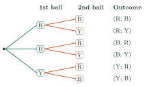
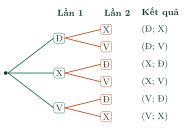
Taking two balls without putting back: 6 outcomesLấy hai quả bóng không trả lại: 6 kết quả \(\Omega=\{(R;\,B);\,(R;\,Y);\,(B;\,R);\,(B;\,Y);\,(Y;\,R);\,(Y;\,B)\}\): \(3\cdot2=6\) outcomes. The pairs \((R;\,R)\), … are not possible.
\(\Omega=\{(Đ;\,X);\,(Đ;\,V);\,(X;\,Đ);\,(X;\,V);\,(V;\,Đ);\,(V;\,X)\}\): có \(3\cdot2=6\) kết quả. Các cặp như \((Đ;\,Đ)\) không thể xảy ra.
6 outcomes.
6 kết quả.
ExampleVí dụ 5ApplicationVận dụng – Choosing lunchChọn bữa trưa
A school canteen offers rice, pho or noodle soup, with iced tea or orange juice. Mai chooses one dish and one drink at random.
(a) Draw a tree diagram and find the number of outcomes.
(b) The canteen adds a choice of dessert: yogurt or fruit. How many outcomes are there now?
Căng tin của trường có cơm, phở hoặc bún, kèm trà đá hoặc nước cam. Mai chọn ngẫu nhiên một món ăn và một loại đồ uống.
a) Vẽ sơ đồ hình cây và tìm số kết quả có thể.
b) Căng tin bổ sung món tráng miệng: sữa chua hoặc trái cây. Lúc này có bao nhiêu kết quả có thể?
Analysis: Each branch of the tree is followed by the same number of new branches.
Phân tích: Mỗi nhánh của cây được nối tiếp bởi cùng một số nhánh mới.
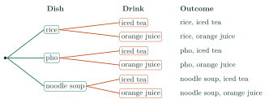
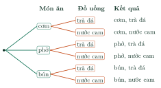
Choosing a dish and a drink: 6 outcomesChọn món ăn và đồ uống: 6 kết quả (a) \(3\cdot2=6\) outcomes.
a) Có \(3\cdot2=6\) kết quả.
(b) Each of the 6 outcomes is followed by 2 desserts: \(6\cdot2=12\) outcomes.
b) Mỗi kết quả trong 6 kết quả trên được nối tiếp bởi 2 món tráng miệng: \(6\cdot2=12\) kết quả.
(a) 6;
(b) 12.
a) 6;
b) 12.
7PracticeBài tập luyện tập
A. Multiple ChoiceA. Trắc nghiệm nhiều lựa chọn
Which of the following is a random experiment?
Hoạt động nào sau đây là một phép thử ngẫu nhiên?
Answer: c. In a random experiment we cannot know the outcome in advance, but we know all the possible outcomes. Answer: tossing a coin and seeing which side faces up.
Đáp án c. Phép thử ngẫu nhiên: không biết trước kết quả nhưng biết tất cả các kết quả có thể. Đáp án: tung một đồng xu và xem mặt nào xuất hiện.
A box has 8 tickets numbered 20, 21, 22, 23, 24, 25, 26, 27. One is taken at random. The sample space is…
Một hộp có 8 lá phiếu đánh số 20, 21, 22, 23, 24, 25, 26, 27. Lấy ngẫu nhiên một lá phiếu. Không gian mẫu là…
Answer: a. \(\Omega\) is the set of all possible outcomes: \(\Omega=\{20;\,21;\,22;\,23;\,24;\,25;\,26;\,27\}\).
Đáp án a. \(\Omega\) là tập hợp tất cả các kết quả có thể: \(\Omega=\{20;\,21;\,22;\,23;\,24;\,25;\,26;\,27\}\).
A canteen offers 3 main dishes and 3 drinks. Minh chooses one main dish and one drink at random. How many outcomes are there?
Căng tin có 3 món chính và 3 loại đồ uống. Minh chọn ngẫu nhiên một món chính và một loại đồ uống. Có bao nhiêu kết quả có thể?
Answer: a. Each outcome is an ordered pair: \(3\cdot3=9\) outcomes.
Đáp án a. Mỗi kết quả là một cặp có thứ tự: có \(3\cdot3=9\) kết quả.
B. True or FalseB. Đúng hoặc sai
A box has 7 cards numbered 1 to 7. Draw one card, do not put it back, then draw a second card. The outcome \((1;\,1)\) belongs to the sample space.
Một hộp có 7 tấm thẻ đánh số từ 1 đến 7. Rút một thẻ, không trả lại hộp, rồi rút thẻ thứ hai. Kết quả \((1;\,1)\) thuộc không gian mẫu.
False. Without putting back, the two cards are different, so \((1;\,1)\notin\Omega\).
Sai. Không trả lại nên hai thẻ khác nhau, do đó \((1;\,1)\notin\Omega\).
A bag has 4 balls numbered 1 to 4. Take one ball, do not put it back, then take a second ball. The sample space has 16 outcomes.
Một túi có 4 quả bóng đánh số từ 1 đến 4. Lấy một quả, không trả lại túi, rồi lấy quả thứ hai. Không gian mẫu có 16 kết quả.
False. Without replacement: \(4\cdot3=12\) ordered pairs.
Sai. Không trả lại: có \(4\cdot3=12\) cặp có thứ tự.
C. Short AnswerC. Trả lời ngắn
A set lunch: choose one of 2 rice dishes, one of 3 soups and one of 3 fruits. A student chooses at random. How many outcomes does the sample space have?
Một suất ăn trưa gồm: một trong 2 món cơm, một trong 3 món canh và một trong 3 loại trái cây. Một học sinh chọn ngẫu nhiên. Không gian mẫu có bao nhiêu kết quả?
Enter a number.
Nhập một số.
Answer: 18. Three steps: \(2\cdot3\cdot3=18\).
Đáp số: 18. Ba bước chọn: \(2\cdot3\cdot3=18\).
The teacher chooses at random 2 of the 4 students An, Chi, Lan, Minh to clean the board (the order does not matter). How many outcomes does the sample space have?
Cô giáo chọn ngẫu nhiên 2 trong 4 bạn An, Chi, Lan, Minh để lau bảng (không phân biệt thứ tự). Không gian mẫu có bao nhiêu kết quả?
Enter a number.
Nhập một số.
Answer: 6. List the pairs: An–Chi, An–Lan, An–Minh… In total \(3+2+1=6\).
Đáp số: 6. Liệt kê các cặp: An–Chi, An–Lan, An–Minh… Tổng cộng \(3+2+1=6\).
D1. Self-practice – RememberingD1. Tự luyện – Mức Nhận biết
The sample space \(\Omega\) of a random experiment is…
Không gian mẫu \(\Omega\) của một phép thử ngẫu nhiên là…
Answer: b. Definition of the sample space.
Đáp án b. Định nghĩa không gian mẫu.
The spinner in the figure has 5 equal sectors. It is spun once and we read the number where the arrow stops. The sample space is…
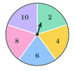
Vòng quay trong hình có 5 hình quạt bằng nhau. Quay một lần và đọc số mà kim chỉ vào khi dừng. Không gian mẫu là…
Answer: c. All numbers on the spinner: \(\Omega=\{2;\,4;\,6;\,8;\,10\}\).
Đáp án c. Tất cả các số trên vòng quay: \(\Omega=\{2;\,4;\,6;\,8;\,10\}\).
Two coins are tossed (H: heads, T: tails). Which of the following is NOT an outcome?
Gieo hai đồng xu (N: ngửa, S: sấp). Kết quả nào sau đây KHÔNG thuộc không gian mẫu?
Answer: d. Each outcome has exactly two letters (one per coin).
Đáp án d. Mỗi kết quả gồm đúng hai chữ cái (ứng với hai đồng xu).
D2. Self-practice – UnderstandingD2. Tự luyện – Mức Thông hiểu
The tree diagram shows how Lan chooses breakfast at random. How many outcomes contain noodles?
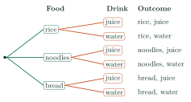
Sơ đồ hình cây cho biết cách Lan chọn ngẫu nhiên bữa sáng. Có bao nhiêu kết quả có món mì?
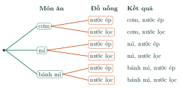
Answer: a. The branch “noodles” has 2 drinks after it.
Đáp án a. Nhánh “mì” có 2 nhánh đồ uống.
A bag has 2 balls: white (W), blue (B) (one of each color). Take one ball at random, then toss a coin (H: heads, T: tails). Which is the sample space?
Một túi có 2 quả bóng: trắng (T), xanh (X) (mỗi màu một quả). Lấy ngẫu nhiên một quả bóng rồi gieo một đồng xu (N: ngửa, S: sấp). Không gian mẫu là…
Answer: a. Each outcome is a pair (ball; coin): \(2\cdot2=4\) outcomes.
Đáp án a. Mỗi kết quả là một cặp (bóng; đồng xu): có \(2\cdot2=4\) kết quả.
A box contains pens of 4 different colors. Take one, keep it out, then take one more. How many outcomes does the sample space have (the order matters)?
Một hộp có 4 chiếc bút có màu khác nhau. Lấy ra một chiếc, không trả lại, rồi lấy tiếp một chiếc nữa. Không gian mẫu có bao nhiêu kết quả (có phân biệt thứ tự)?
Answer: c. 4 choices for the first and 3 for the second: \(4\cdot3=12\).
Đáp án c. Lần đầu có 4 cách, lần sau có 3 cách: \(4\cdot3=12\).
D3. Self-practice – Basic applicationD3. Tự luyện – Mức Vận dụng thấp
A locker code has one letter from A, B followed by one digit from 1 to 5. A code is chosen at random. How many outcomes are there? Give one example.
Mã khóa tủ gồm một chữ cái trong các chữ A, B, theo sau là một chữ số từ 1 đến 5. Chọn ngẫu nhiên một mã. Có bao nhiêu kết quả có thể? Nêu một ví dụ.
Answer: a. \(2\cdot5=10\) codes; the letter comes first and the digit is from 1 to 5.
Đáp án a. \(2\cdot5=10\) mã; chữ cái đứng trước, chữ số từ 1 đến 5.
| Spinner 1 \ Spinner 2 | A | B | C | D |
|---|---|---|---|---|
| 1 | \((1;\,A)\) | \((1;\,B)\) | \((1;\,C)\) | \((1;\,D)\) |
| 2 | \((2;\,A)\) | \((2;\,B)\) | \((2;\,C)\) | ? |
| 3 | \((3;\,A)\) | \((3;\,B)\) | \((3;\,C)\) | \((3;\,D)\) |
| Vòng 1 \ Vòng 2 | A | B | C | D |
|---|---|---|---|---|
| 1 | \((1;\,A)\) | \((1;\,B)\) | \((1;\,C)\) | \((1;\,D)\) |
| 2 | \((2;\,A)\) | \((2;\,B)\) | \((2;\,C)\) | ? |
| 3 | \((3;\,A)\) | \((3;\,B)\) | \((3;\,C)\) | \((3;\,D)\) |
Answer: b. Row 2 and column D: \((2;\,D)\).
Đáp án b. Hàng 2, cột D: \((2;\,D)\).
Use a tree diagram: when three coins are tossed, how many outcomes does the sample space have?
Dùng sơ đồ hình cây: khi gieo ba đồng xu, không gian mẫu có bao nhiêu kết quả?
Answer: b. Each step doubles the branches: \(2^{3}=8\).
Đáp án b. Mỗi bước nhân đôi số nhánh: \(2^{3}=8\).
D4. Self-practice – Advanced applicationD4. Tự luyện – Mức Vận dụng
A security code is one letter (from 3 letters) followed by two DIFFERENT digits chosen from 1, 2, 3, 4. A code is chosen at random. How many outcomes does the sample space have?
Mã bảo mật gồm một chữ cái (trong 3 chữ cái) theo sau là hai chữ số KHÁC NHAU lấy từ 1, 2, 3, 4. Chọn ngẫu nhiên một mã. Không gian mẫu có bao nhiêu kết quả?
Answer: d. Tree diagram: 3 letters, then 4 digits, then 3 digits: \(3\cdot4\cdot3=36\).
Đáp án d. Sơ đồ hình cây: 3 chữ cái, rồi 4 chữ số, rồi 3 chữ số: \(3\cdot4\cdot3=36\).
6 teams play a football tournament; every two teams play each other exactly once. A reporter chooses one match at random to write about. How many outcomes does the sample space have?
6 đội bóng thi đấu vòng tròn một lượt (hai đội bất kì gặp nhau đúng một lần). Một phóng viên chọn ngẫu nhiên một trận để viết bài. Không gian mẫu có bao nhiêu kết quả?
Answer: a. The matches are the unordered pairs of teams: \(\dfrac{6\cdot5}{2}=15\).
Đáp án a. Mỗi trận ứng với một cặp đội không phân biệt thứ tự: \(\dfrac{6\cdot5}{2}=15\).
Toss a coin. If it shows heads, roll a die; if it shows tails, spin a spinner with 4 equal sectors numbered 1 to 4. How many outcomes does the sample space have?
Gieo một đồng xu. Nếu được mặt ngửa thì gieo tiếp một con xúc xắc; nếu được mặt sấp thì quay một vòng quay có 4 hình quạt bằng nhau đánh số từ 1 đến 4. Không gian mẫu có bao nhiêu kết quả?
Answer: d. Tree diagram: the heads branch has 6 outcomes, the tails branch has 4: \(6+4=10\).
Đáp án d. Sơ đồ hình cây: nhánh ngửa có 6 kết quả, nhánh sấp có 4 kết quả: \(6+4=10\).
A. Multiple ChoiceA. Trắc nghiệm nhiều lựa chọn
Which activity below is NOT a random experiment?
Trong các hoạt động dưới đây, hoạt động nào KHÔNG phải là phép thử ngẫu nhiên?
Answer: c. In a random experiment we cannot know the outcome in advance, but we know all the possible outcomes. Answer: dropping a stone and seeing whether it falls down.
Đáp án c. Phép thử ngẫu nhiên: không biết trước kết quả nhưng biết tất cả các kết quả có thể. Đáp án: thả một hòn đá và xem nó có rơi xuống không.
A die is rolled once. The sample space is…
Gieo một con xúc xắc một lần. Không gian mẫu là…
Answer: b. \(\Omega\) is the set of all possible outcomes: \(\Omega=\{1;\,2;\,3;\,4;\,5;\,6\}\).
Đáp án b. \(\Omega\) là tập hợp tất cả các kết quả có thể: \(\Omega=\{1;\,2;\,3;\,4;\,5;\,6\}\).
A canteen offers 4 main dishes and 3 drinks. Minh chooses one main dish and one drink at random. How many outcomes are there?
Căng tin có 4 món chính và 3 loại đồ uống. Minh chọn ngẫu nhiên một món chính và một loại đồ uống. Có bao nhiêu kết quả có thể?
Answer: d. Each outcome is an ordered pair: \(4\cdot3=12\) outcomes.
Đáp án d. Mỗi kết quả là một cặp có thứ tự: có \(4\cdot3=12\) kết quả.
B. True or FalseB. Đúng hoặc sai
A box has 6 cards numbered 1 to 6. Draw one card, put it back, then draw a second card. The outcome \((3;\,6)\) belongs to the sample space.
Một hộp có 6 tấm thẻ đánh số từ 1 đến 6. Rút một thẻ, trả lại hộp, rồi rút thẻ thứ hai. Kết quả \((3;\,6)\) thuộc không gian mẫu.
True. The card is put back, so the two numbers can be equal or different: \((3;\,6)\in\Omega\).
Đúng. Thẻ được trả lại nên hai số có thể bằng nhau hoặc khác nhau: \((3;\,6)\in\Omega\).
A bag has 7 balls numbered 1 to 7. Take one ball, do not put it back, then take a second ball. The sample space has 42 outcomes.
Một túi có 7 quả bóng đánh số từ 1 đến 7. Lấy một quả, không trả lại túi, rồi lấy quả thứ hai. Không gian mẫu có 42 kết quả.
True. Without replacement: \(7\cdot6=42\) ordered pairs.
Đúng. Không trả lại: có \(7\cdot6=42\) cặp có thứ tự.
C. Short AnswerC. Trả lời ngắn
A set lunch: choose one of 4 rice dishes, one of 4 soups and one of 2 fruits. A student chooses at random. How many outcomes does the sample space have?
Một suất ăn trưa gồm: một trong 4 món cơm, một trong 4 món canh và một trong 2 loại trái cây. Một học sinh chọn ngẫu nhiên. Không gian mẫu có bao nhiêu kết quả?
Enter a number.
Nhập một số.
Answer: 32. Three steps: \(4\cdot4\cdot2=32\).
Đáp số: 32. Ba bước chọn: \(4\cdot4\cdot2=32\).
The teacher chooses at random 2 of the 6 students An, Chi, Lan, Minh, Nam, Khoa to clean the board (the order does not matter). How many outcomes does the sample space have?
Cô giáo chọn ngẫu nhiên 2 trong 6 bạn An, Chi, Lan, Minh, Nam, Khoa để lau bảng (không phân biệt thứ tự). Không gian mẫu có bao nhiêu kết quả?
Enter a number.
Nhập một số.
Answer: 15. List the pairs: An–Chi, An–Lan, An–Minh, An–Nam, An–Khoa… In total \(5+4+3+2+1=15\).
Đáp số: 15. Liệt kê các cặp: An–Chi, An–Lan, An–Minh, An–Nam, An–Khoa… Tổng cộng \(5+4+3+2+1=15\).
D1. Self-practice – RememberingD1. Tự luyện – Mức Nhận biết
An experiment is called random when…
Một phép thử được gọi là phép thử ngẫu nhiên khi…
Answer: a. Definition of a random experiment.
Đáp án a. Định nghĩa phép thử ngẫu nhiên.
The spinner in the figure has 7 equal sectors. It is spun once and we read the number where the arrow stops. The sample space is…
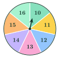
Vòng quay trong hình có 7 hình quạt bằng nhau. Quay một lần và đọc số mà kim chỉ vào khi dừng. Không gian mẫu là…
Answer: c. All numbers on the spinner: \(\Omega=\{10;\,11;\,12;\,13;\,14;\,15;\,16\}\).
Đáp án c. Tất cả các số trên vòng quay: \(\Omega=\{10;\,11;\,12;\,13;\,14;\,15;\,16\}\).
A coin is tossed and a die is rolled (H: heads, T: tails). Which of the following is NOT an outcome?
Gieo một đồng xu và một con xúc xắc (N: ngửa, S: sấp). Kết quả nào sau đây KHÔNG thuộc không gian mẫu?
Answer: c. A die has only the numbers 1 to 6.
Đáp án c. Con xúc xắc chỉ có từ 1 đến 6 chấm.
D2. Self-practice – UnderstandingD2. Tự luyện – Mức Thông hiểu
The tree diagram shows how Minh chooses breakfast at random. How many outcomes contain noodles?
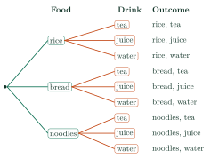
Sơ đồ hình cây cho biết cách Minh chọn ngẫu nhiên bữa sáng. Có bao nhiêu kết quả có món mì?
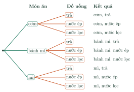
Answer: a. The branch “noodles” has 3 drinks after it.
Đáp án a. Nhánh “mì” có 3 nhánh đồ uống.
A bag has 3 balls: red (R), white (W), blue (B) (one of each color). Take one ball at random, then toss a coin (H: heads, T: tails). Which is the sample space?
Một túi có 3 quả bóng: đỏ (Đ), trắng (T), xanh (X) (mỗi màu một quả). Lấy ngẫu nhiên một quả bóng rồi gieo một đồng xu (N: ngửa, S: sấp). Không gian mẫu là…
Answer: d. Each outcome is a pair (ball; coin): \(3\cdot2=6\) outcomes.
Đáp án d. Mỗi kết quả là một cặp (bóng; đồng xu): có \(3\cdot2=6\) kết quả.
A box contains cards numbered 1 to 6. Take one, put it back, then take one more. How many outcomes does the sample space have (the order matters)?
Một hộp có 6 tấm thẻ đánh số từ 1 đến 6. Lấy ra một chiếc, trả lại hộp, rồi lấy tiếp một chiếc nữa. Không gian mẫu có bao nhiêu kết quả (có phân biệt thứ tự)?
Answer: d. 6 choices for the first and 6 for the second: \(6\cdot6=36\).
Đáp án d. Lần đầu có 6 cách, lần sau có 6 cách: \(6\cdot6=36\).
D3. Self-practice – Basic applicationD3. Tự luyện – Mức Vận dụng thấp
A locker code has one letter from X, Y, Z followed by one digit from 1 to 5. A code is chosen at random. How many outcomes are there? Give one example.
Mã khóa tủ gồm một chữ cái trong các chữ X, Y, Z, theo sau là một chữ số từ 1 đến 5. Chọn ngẫu nhiên một mã. Có bao nhiêu kết quả có thể? Nêu một ví dụ.
Answer: d. \(3\cdot5=15\) codes; the letter comes first and the digit is from 1 to 5.
Đáp án d. \(3\cdot5=15\) mã; chữ cái đứng trước, chữ số từ 1 đến 5.
| Spinner 1 \ Spinner 2 | A | B | C |
|---|---|---|---|
| 1 | \((1;\,A)\) | \((1;\,B)\) | \((1;\,C)\) |
| 2 | \((2;\,A)\) | \((2;\,B)\) | \((2;\,C)\) |
| 3 | \((3;\,A)\) | ? | \((3;\,C)\) |
| 4 | \((4;\,A)\) | \((4;\,B)\) | \((4;\,C)\) |
| Vòng 1 \ Vòng 2 | A | B | C |
|---|---|---|---|
| 1 | \((1;\,A)\) | \((1;\,B)\) | \((1;\,C)\) |
| 2 | \((2;\,A)\) | \((2;\,B)\) | \((2;\,C)\) |
| 3 | \((3;\,A)\) | ? | \((3;\,C)\) |
| 4 | \((4;\,A)\) | \((4;\,B)\) | \((4;\,C)\) |
Answer: d. Row 3 and column B: \((3;\,B)\).
Đáp án d. Hàng 3, cột B: \((3;\,B)\).
Use a tree diagram: when a coin is tossed four times, how many outcomes does the sample space have?
Dùng sơ đồ hình cây: khi gieo một đồng xu bốn lần, không gian mẫu có bao nhiêu kết quả?
Answer: c. Each step doubles the branches: \(2^{4}=16\).
Đáp án c. Mỗi bước nhân đôi số nhánh: \(2^{4}=16\).
D4. Self-practice – Advanced applicationD4. Tự luyện – Mức Vận dụng
A security code is one letter (from 3 letters) followed by two DIFFERENT digits chosen from 1, 2, 3, 4, 5. A code is chosen at random. How many outcomes does the sample space have?
Mã bảo mật gồm một chữ cái (trong 3 chữ cái) theo sau là hai chữ số KHÁC NHAU lấy từ 1, 2, 3, 4, 5. Chọn ngẫu nhiên một mã. Không gian mẫu có bao nhiêu kết quả?
Answer: d. Tree diagram: 3 letters, then 5 digits, then 4 digits: \(3\cdot5\cdot4=60\).
Đáp án d. Sơ đồ hình cây: 3 chữ cái, rồi 5 chữ số, rồi 4 chữ số: \(3\cdot5\cdot4=60\).
7 teams play a football tournament; every two teams play each other exactly once. A reporter chooses one match at random to write about. How many outcomes does the sample space have?
7 đội bóng thi đấu vòng tròn một lượt (hai đội bất kì gặp nhau đúng một lần). Một phóng viên chọn ngẫu nhiên một trận để viết bài. Không gian mẫu có bao nhiêu kết quả?
Answer: a. The matches are the unordered pairs of teams: \(\dfrac{7\cdot6}{2}=21\).
Đáp án a. Mỗi trận ứng với một cặp đội không phân biệt thứ tự: \(\dfrac{7\cdot6}{2}=21\).
Toss a coin. If it shows heads, roll a die; if it shows tails, spin a spinner with 3 equal sectors numbered 1 to 3. How many outcomes does the sample space have?
Gieo một đồng xu. Nếu được mặt ngửa thì gieo tiếp một con xúc xắc; nếu được mặt sấp thì quay một vòng quay có 3 hình quạt bằng nhau đánh số từ 1 đến 3. Không gian mẫu có bao nhiêu kết quả?
Answer: b. Tree diagram: the heads branch has 6 outcomes, the tails branch has 3: \(6+3=9\).
Đáp án b. Sơ đồ hình cây: nhánh ngửa có 6 kết quả, nhánh sấp có 3 kết quả: \(6+3=9\).
A. Multiple ChoiceA. Trắc nghiệm nhiều lựa chọn
Which of the following is NOT a random experiment?
Hoạt động nào sau đây KHÔNG phải là phép thử ngẫu nhiên?
Answer: b. In a random experiment we cannot know the outcome in advance, but we know all the possible outcomes. Answer: dropping a stone and seeing whether it falls down.
Đáp án b. Phép thử ngẫu nhiên: không biết trước kết quả nhưng biết tất cả các kết quả có thể. Đáp án: thả một hòn đá và xem nó có rơi xuống không.
A spinner has 3 equal sectors numbered 1 to 3. It is spun once. The sample space is…
Một vòng quay có 3 hình quạt bằng nhau đánh số từ 1 đến 3. Quay một lần. Không gian mẫu là…
Answer: b. \(\Omega\) is the set of all possible outcomes: \(\Omega=\{1;\,2;\,3\}\).
Đáp án b. \(\Omega\) là tập hợp tất cả các kết quả có thể: \(\Omega=\{1;\,2;\,3\}\).
Two coins are tossed together. How many outcomes does the sample space have?
Gieo đồng thời hai đồng xu. Không gian mẫu có bao nhiêu kết quả?
Answer: c. Each outcome is an ordered pair: \(2\cdot2=4\) outcomes.
Đáp án c. Mỗi kết quả là một cặp có thứ tự: có \(2\cdot2=4\) kết quả.
B. True or FalseB. Đúng hoặc sai
A box has 7 cards numbered 1 to 7. Draw one card, do not put it back, then draw a second card. The outcome \((1;\,7)\) belongs to the sample space.
Một hộp có 7 tấm thẻ đánh số từ 1 đến 7. Rút một thẻ, không trả lại hộp, rồi rút thẻ thứ hai. Kết quả \((1;\,7)\) thuộc không gian mẫu.
True. Two different cards: \((1;\,7)\in\Omega\).
Đúng. Hai thẻ khác nhau: \((1;\,7)\in\Omega\).
A bag has 3 balls numbered 1 to 3. Take one ball, put it back, then take a second ball. The sample space has 6 outcomes.
Một túi có 3 quả bóng đánh số từ 1 đến 3. Lấy một quả, trả lại túi, rồi lấy quả thứ hai. Không gian mẫu có 6 kết quả.
False. With replacement: \(3\cdot3=9\) ordered pairs.
Sai. Có trả lại: có \(3\cdot3=9\) cặp có thứ tự.
C. Short AnswerC. Trả lời ngắn
A set lunch: choose one of 3 rice dishes, one of 2 soups and one of 2 fruits. A student chooses at random. How many outcomes does the sample space have?
Một suất ăn trưa gồm: một trong 3 món cơm, một trong 2 món canh và một trong 2 loại trái cây. Một học sinh chọn ngẫu nhiên. Không gian mẫu có bao nhiêu kết quả?
Enter a number.
Nhập một số.
Answer: 12. Three steps: \(3\cdot2\cdot2=12\).
Đáp số: 12. Ba bước chọn: \(3\cdot2\cdot2=12\).
The teacher chooses at random 2 of the 5 students An, Chi, Lan, Minh, Nam to clean the board (the order does not matter). How many outcomes does the sample space have?
Cô giáo chọn ngẫu nhiên 2 trong 5 bạn An, Chi, Lan, Minh, Nam để lau bảng (không phân biệt thứ tự). Không gian mẫu có bao nhiêu kết quả?
Enter a number.
Nhập một số.
Answer: 10. List the pairs: An–Chi, An–Lan, An–Minh, An–Nam… In total \(4+3+2+1=10\).
Đáp số: 10. Liệt kê các cặp: An–Chi, An–Lan, An–Minh, An–Nam… Tổng cộng \(4+3+2+1=10\).
D1. Self-practice – RememberingD1. Tự luyện – Mức Nhận biết
A red die and a blue die are rolled; an outcome \((a;\,b)\) means \(a\) on the red die and \(b\) on the blue die. Which statement is correct?
Gieo một con xúc xắc đỏ và một con xúc xắc xanh; kết quả \((a;\,b)\) nghĩa là xúc xắc đỏ ra \(a\) chấm, xúc xắc xanh ra \(b\) chấm. Khẳng định nào đúng?
Answer: a. The order matters: red 2 – blue 5 differs from red 5 – blue 2; \(n(\Omega)=36\).
Đáp án a. Có phân biệt thứ tự: đỏ 2 – xanh 5 khác đỏ 5 – xanh 2; không gian mẫu có 36 kết quả.
The spinner in the figure has 4 equal sectors. It is spun once and we read the number where the arrow stops. The sample space is…
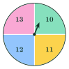
Vòng quay trong hình có 4 hình quạt bằng nhau. Quay một lần và đọc số mà kim chỉ vào khi dừng. Không gian mẫu là…
Answer: a. All numbers on the spinner: \(\Omega=\{10;\,11;\,12;\,13\}\).
Đáp án a. Tất cả các số trên vòng quay: \(\Omega=\{10;\,11;\,12;\,13\}\).
Two dice are rolled. Which of the following is NOT an outcome?
Gieo hai con xúc xắc. Kết quả nào sau đây KHÔNG thuộc không gian mẫu?
Answer: d. Each die shows a number from 1 to 6.
Đáp án d. Mỗi con xúc xắc ra từ 1 đến 6 chấm.
D2. Self-practice – UnderstandingD2. Tự luyện – Mức Thông hiểu
The tree diagram shows how Hoa chooses breakfast at random. How many outcomes contain pho?
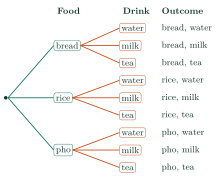
Sơ đồ hình cây cho biết cách Hoa chọn ngẫu nhiên bữa sáng. Có bao nhiêu kết quả có món phở?
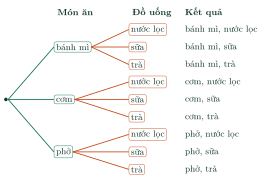
Answer: c. The branch “pho” has 3 drinks after it.
Đáp án c. Nhánh “phở” có 3 nhánh đồ uống.
A bag has 3 balls: red (R), blue (B), yellow (Y) (one of each color). Take one ball at random, then toss a coin (H: heads, T: tails). Which is the sample space?
Một túi có 3 quả bóng: đỏ (Đ), xanh (X), vàng (V) (mỗi màu một quả). Lấy ngẫu nhiên một quả bóng rồi gieo một đồng xu (N: ngửa, S: sấp). Không gian mẫu là…
Answer: d. Each outcome is a pair (ball; coin): \(3\cdot2=6\) outcomes.
Đáp án d. Mỗi kết quả là một cặp (bóng; đồng xu): có \(3\cdot2=6\) kết quả.
A box contains cards numbered 1 to 5. Take one, put it back, then take one more. How many outcomes does the sample space have (the order matters)?
Một hộp có 5 tấm thẻ đánh số từ 1 đến 5. Lấy ra một chiếc, trả lại hộp, rồi lấy tiếp một chiếc nữa. Không gian mẫu có bao nhiêu kết quả (có phân biệt thứ tự)?
Answer: c. 5 choices for the first and 5 for the second: \(5\cdot5=25\).
Đáp án c. Lần đầu có 5 cách, lần sau có 5 cách: \(5\cdot5=25\).
D3. Self-practice – Basic applicationD3. Tự luyện – Mức Vận dụng thấp
A locker code has one letter from X, Y, Z followed by one digit from 1 to 6. A code is chosen at random. How many outcomes are there? Give one example.
Mã khóa tủ gồm một chữ cái trong các chữ X, Y, Z, theo sau là một chữ số từ 1 đến 6. Chọn ngẫu nhiên một mã. Có bao nhiêu kết quả có thể? Nêu một ví dụ.
Answer: d. \(3\cdot6=18\) codes; the letter comes first and the digit is from 1 to 6.
Đáp án d. \(3\cdot6=18\) mã; chữ cái đứng trước, chữ số từ 1 đến 6.
| Spinner 1 \ Spinner 2 | A | B | C | D | E |
|---|---|---|---|---|---|
| 1 | \((1;\,A)\) | ? | \((1;\,C)\) | \((1;\,D)\) | \((1;\,E)\) |
| 2 | \((2;\,A)\) | \((2;\,B)\) | \((2;\,C)\) | \((2;\,D)\) | \((2;\,E)\) |
| 3 | \((3;\,A)\) | \((3;\,B)\) | \((3;\,C)\) | \((3;\,D)\) | \((3;\,E)\) |
| Vòng 1 \ Vòng 2 | A | B | C | D | E |
|---|---|---|---|---|---|
| 1 | \((1;\,A)\) | ? | \((1;\,C)\) | \((1;\,D)\) | \((1;\,E)\) |
| 2 | \((2;\,A)\) | \((2;\,B)\) | \((2;\,C)\) | \((2;\,D)\) | \((2;\,E)\) |
| 3 | \((3;\,A)\) | \((3;\,B)\) | \((3;\,C)\) | \((3;\,D)\) | \((3;\,E)\) |
Answer: c. Row 1 and column B: \((1;\,B)\).
Đáp án c. Hàng 1, cột B: \((1;\,B)\).
Use a tree diagram: when a family has three children (B: boy, G: girl, in order of birth), how many outcomes does the sample space have?
Dùng sơ đồ hình cây: khi một gia đình có ba con (T: trai, G: gái, theo thứ tự sinh), không gian mẫu có bao nhiêu kết quả?
Answer: a. Each step doubles the branches: \(2^{3}=8\).
Đáp án a. Mỗi bước nhân đôi số nhánh: \(2^{3}=8\).
D4. Self-practice – Advanced applicationD4. Tự luyện – Mức Vận dụng
A security code is one letter (from 2 letters) followed by two DIFFERENT digits chosen from 1, 2, 3, 4. A code is chosen at random. How many outcomes does the sample space have?
Mã bảo mật gồm một chữ cái (trong 2 chữ cái) theo sau là hai chữ số KHÁC NHAU lấy từ 1, 2, 3, 4. Chọn ngẫu nhiên một mã. Không gian mẫu có bao nhiêu kết quả?
Answer: a. Tree diagram: 2 letters, then 4 digits, then 3 digits: \(2\cdot4\cdot3=24\).
Đáp án a. Sơ đồ hình cây: 2 chữ cái, rồi 4 chữ số, rồi 3 chữ số: \(2\cdot4\cdot3=24\).
5 teams play a football tournament; every two teams play each other exactly once. A reporter chooses one match at random to write about. How many outcomes does the sample space have?
5 đội bóng thi đấu vòng tròn một lượt (hai đội bất kì gặp nhau đúng một lần). Một phóng viên chọn ngẫu nhiên một trận để viết bài. Không gian mẫu có bao nhiêu kết quả?
Answer: a. The matches are the unordered pairs of teams: \(\dfrac{5\cdot4}{2}=10\).
Đáp án a. Mỗi trận ứng với một cặp đội không phân biệt thứ tự: \(\dfrac{5\cdot4}{2}=10\).
Toss a coin. If it shows heads, roll a die; if it shows tails, spin a spinner with 5 equal sectors numbered 1 to 5. How many outcomes does the sample space have?
Gieo một đồng xu. Nếu được mặt ngửa thì gieo tiếp một con xúc xắc; nếu được mặt sấp thì quay một vòng quay có 5 hình quạt bằng nhau đánh số từ 1 đến 5. Không gian mẫu có bao nhiêu kết quả?
Answer: b. Tree diagram: the heads branch has 6 outcomes, the tails branch has 5: \(6+5=11\).
Đáp án b. Sơ đồ hình cây: nhánh ngửa có 6 kết quả, nhánh sấp có 5 kết quả: \(6+5=11\).
8Common MistakesLỗi thường gặp
Forgetting the order. When rolling two different dice, \((2;\,5)\) and \((5;\,2)\) are two outcomes.
Quên thứ tự. Khi gieo hai con xúc xắc khác nhau, \((2;\,5)\) và \((5;\,2)\) là hai kết quả.
Adding instead of multiplying. 3 dishes and 2 drinks give \(3\cdot2=6\) outcomes, not \(3+2\).
Cộng thay vì nhân. 3 món ăn và 2 đồ uống cho \(3\cdot2=6\) kết quả, không phải \(3+2\).
Allowing impossible outcomes. Without putting back, the same ball cannot be taken twice.
Liệt kê kết quả không thể xảy ra. Lấy không trả lại thì không thể lấy cùng một quả bóng hai lần.
Writing the sample space wrongly. \(\Omega\) lists every possible outcome exactly once, inside braces.
Viết sai không gian mẫu. \(\Omega\) liệt kê mỗi kết quả có thể đúng một lần, trong dấu ngoặc nhọn.
9Lesson SummaryTổng kết
A random experiment: the outcome is not known in advance, but all possible outcomes are known.
Phép thử ngẫu nhiên: không biết trước kết quả nhưng biết tất cả các kết quả có thể.
The sample space \(\Omega\) is the set of all possible outcomes.
Không gian mẫu \(\Omega\) là tập hợp tất cả các kết quả có thể.
Two-step experiments: outcomes are ordered pairs; list them with a table or a tree diagram (\(m\cdot n\) outcomes).
Phép thử hai bước: kết quả là cặp có thứ tự; liệt kê bằng bảng hoặc sơ đồ hình cây (có \(m\cdot n\) kết quả).
Key English: random experiment, outcome, sample space, coin toss, die (dice), tree diagram.
Thuật ngữ cần nhớ (chạm vào để xem tiếng Anh): phép thử ngẫu nhiên, kết quả có thể, không gian mẫu, gieo đồng xu, con xúc xắc, sơ đồ hình cây.